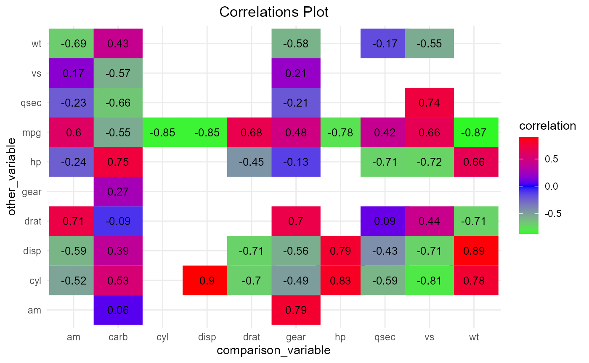
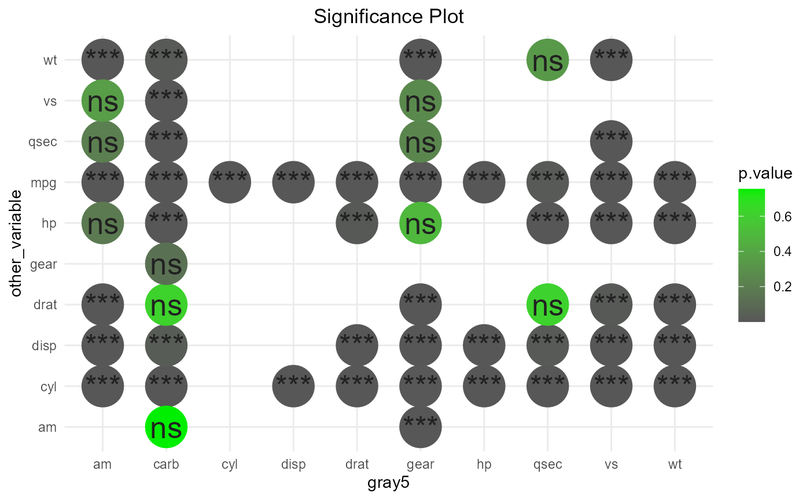

get_var_corr
As can probably(hopefully) be guessed from the name, this provides a convenient way to get variable correlations. It enables one to get correlation between one variable and all other variables in the data set.
Previously, one would set get_all to TRUE if they wanted to get correlations between all variables. This argument has been dropped in favor of simply supplying an optional other_vars vector if one does not want to get all correlations.
library(manymodelr)
#> Loading required package: caret
#> Loading required package: lattice
#> Loading required package: ggplot2
#> Loading required package: Metrics
#>
#> Attaching package: 'Metrics'
#> The following objects are masked from 'package:caret':
#>
#> precision, recall
#> Loading required package: e1071
#> Warning: package 'e1071' was built under R version 4.0.4
#> Welcome to manymodelr. This is manymodelr version 0.3.6.
#> Please file issues and feedback at https://www.github.com/Nelson-Gon/manymodelr/issues
#> Turn this message off using 'suppressPackageStartupMessages(library(manymodelr))'
#> Happy Modelling! :)
# getall correlations
# default pearson
head( corrs <- get_var_corr(mtcars,comparison_var="mpg") )
#> comparison_var other_var p.value correlation lower_ci upper_ci
#> 1 mpg cyl 6.112687e-10 -0.8521620 -0.92576936 -0.7163171
#> 2 mpg disp 9.380327e-10 -0.8475514 -0.92335937 -0.7081376
#> 3 mpg hp 1.787835e-07 -0.7761684 -0.88526861 -0.5860994
#> 4 mpg drat 1.776240e-05 0.6811719 0.43604838 0.8322010
#> 5 mpg wt 1.293959e-10 -0.8676594 -0.93382641 -0.7440872
#> 6 mpg qsec 1.708199e-02 0.4186840 0.08195487 0.6696186Previously, one would also set drop_columns to TRUE if they wanted to drop factor columns. Now, a user simply provides a character vector specifying which column types(classes) should be dropped. It defaults to c("character","factor").
data("yields", package="manymodelr")
# purely demonstrative
get_var_corr(yields,"height",other_vars="weight",
drop_columns=c("factor","character"),method="spearman",
exact=FALSE)
#> Warning in get_var_corr.data.frame(yields, "height", other_vars = "weight", :
#> Columns with classes in drop_columns have been discarded. Youcan disable this
#> yourself by setting drop_columns to NULL.
#> comparison_var other_var p.value correlation
#> 1 height weight 4.204642e-07 -0.1591719Similarly, get_var_corr_ (note the underscore at the end) provides a convenient way to get combination-wise correlations.
head(get_var_corr_(yields),6)
#> Warning in get_var_corr_.data.frame(yields): Columns with classes in
#> drop_columns were dropped.
#> comparison_var other_var p.value correlation lower_ci upper_ci
#> 1 height weight 1.470866e-08 -0.17793196 -0.23730741 -0.11723201
#> 2 height yield 4.473683e-01 0.02405390 -0.03799584 0.08591886
#> 3 weight yield 2.986171e-01 0.03290108 -0.02915146 0.09470100To use only a subset of the data, we can use provide a list of columns to subset_cols. By default, the first value(vector) in the list is mapped to comparison_var and the other to other_Var. The list is therefore of length 2.
head(get_var_corr_(mtcars,subset_cols=list(c("mpg","vs"),c("disp","wt")),
method="spearman",exact=FALSE))
#> comparison_var other_var p.value correlation
#> 2 mpg disp 6.370336e-13 -0.9088824
#> 5 mpg wt 1.487595e-11 -0.8864220plot_corr
Obtaining correlations would mostly likely benefit from some form of visualization. plot_corr aims to achieve just that. There are currently two plot styles, squares and circles. circles has a shape argument that can allow for more flexibility. It should be noted that the correlation matrix supplied to this function is an object produced by get_var_corr_.
To modify the plot a bit, we can choose to switch the x and y values as shown below.
plot_corr(mtcars,show_which = "corr",
round_which = "correlation",decimals = 2,x="other_var", y="comparison_var",plot_style = "squares"
,width = 1.1,custom_cols = c("green","blue","red"),colour_by = "correlation")
#> Warning in plot_corr(mtcars, show_which = "corr", round_which = "correlation", :
#> Using colour_by for the legend title.
To show significance of the results instead of the correlations themselves, we can set show_which to “signif” as shown below. By default, significance is set to 0.05. You can override this by supplying a different signif_cutoff.
# color by p value
# change custom colors by supplying custom_cols
# significance is default
set.seed(233)
plot_corr(mtcars, x="other_var", y="comparison_var",plot_style = "circles",show_which = "signif", colour_by = "p.value", sample(colours(),3))
#> Warning in plot_corr(mtcars, x = "other_var", y = "comparison_var", plot_style =
#> "circles", : Using colour_by for the legend title.
To explore more options, please take a look at the documentation.